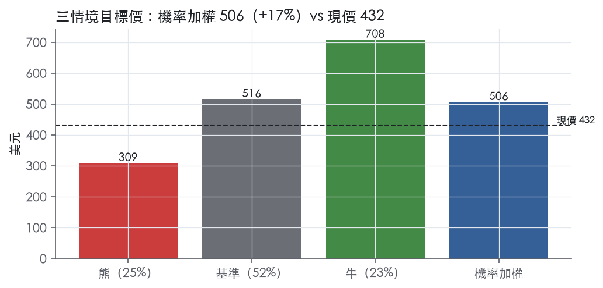
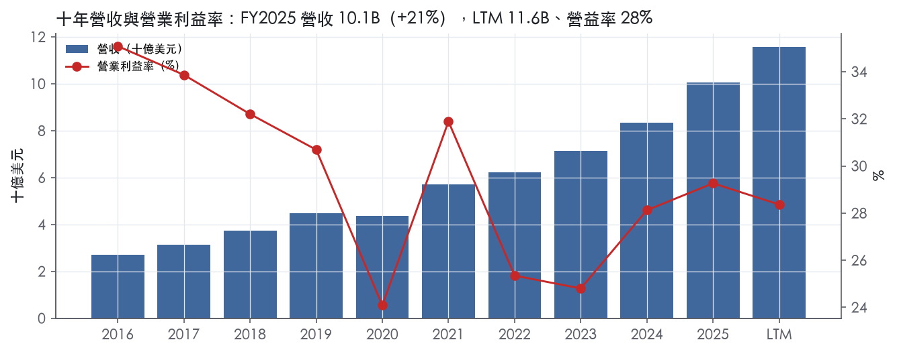
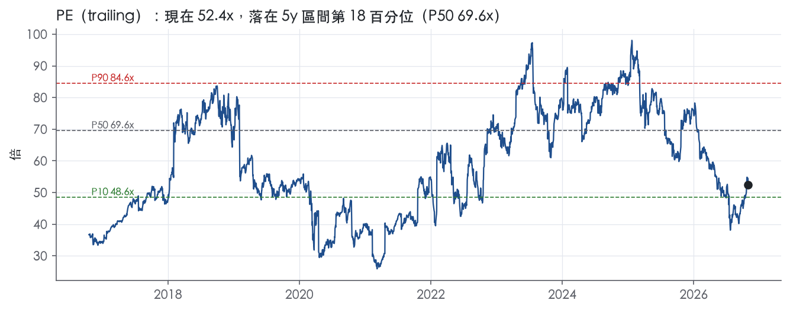
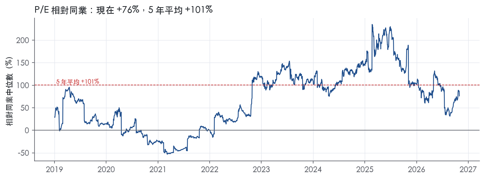
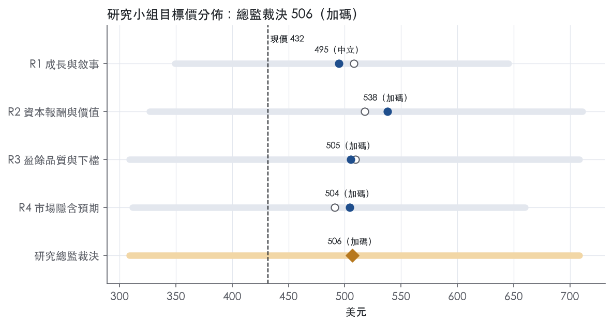
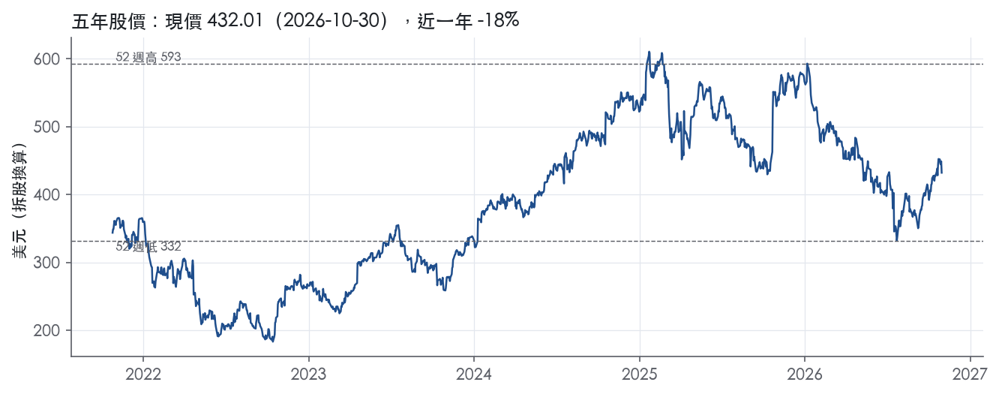

評等總表 › 醫療保健 › ISRG
盈餘正常化撐上檔，倍數不擴張，看多｜評等 加碼｜目標價 506
| 報告日 | 評等 | 目標價 | 當時股價 | 超額報酬 |
|---|---|---|---|---|
| 2026-10-30 | 加碼 | 506 | 432 | +7.7% |
| 評等 | 加碼（邊界，鄰近中立） |
| 12 個月目標價 | 506 美元 |
| 現價 | 432.01 美元（2026-10-30） |
| 預期報酬 | 股價 +17.2%＋股息 0.0%＝總報酬 +17.2%；同業籃門檻 9.6%，超額 +7.7% |
| 估值方法 | P/E 42.0x，套在第 5–8 季的EPS（也就是一年後的未來四季） |
| 三情境 | 熊 309／基準 516／牛 708 |
| 研究流程 | 四位研究員兩輪辯論＋研究總監裁決 |
| 資料來源 | SEC EDGAR XBRL、Tiingo、FRED（全免費） |
盈餘正常化撐上檔，倍數不擴張，看多（研究總監裁決，四位研究員兩輪辯論後）
評等 加碼（邊界，鄰近中立）｜12 個月目標價 506 美元（總監三情境機率加權 508 與研究員中位數 505 各半）｜現價 432.01（2026-10-30）
預期報酬：股價 +17.2%＋股息 0.0%＝總報酬 +17.2%。同業籃門檻 9.6%，超額 +7.7%，離中立的分界不到三個百分點，屬邊界評等（落在其他級距的機率約三成）。
估值方法：P/E 42.0x，套在第 5–8 季的EPS（也就是一年後的未來四季）。三情境：熊 309（25%）／基準 516（52%）／牛 708（23%）。
什麼會讓研究總監改變看法：禁制令條款取消使用次數限制或開放第三方再處理，轉中性並上調熊機率；2027 手術量指引下緣低於 12%，y2 成長退回基準附近並轉中性。
| 過去四季（實際，FY2026Q3） | 未來四季 | 第 5–8 季 | 第 9–12 季 | |
|---|---|---|---|---|
| 營收（B） | 11.6B | 13.5B | 15.3B | 16.8B |
| 營收成長 | 20.5% | 17.0% | 13.0% | 10.0% |
| 營業利益率 | 28.4% | 31.5% | 32.0% | 32.0% |
| EPS（美元） | 8.25 | 10.48 | 12.28 | 13.78 |
| EPS 成長 | 8.9% | 27.0% | 17.1% | 12.2% |
| 每股股息（美元） | — | 0.00 | 0.00 | 0.00 |
| P/E（現價） | 52.4x | 41.2x | 35.2x | 31.3x |
| 股息殖利率（現價） | — | — | — | — |
過去四季為申報數字；預測為研究總監的假設、程式計算。倍數與殖利率都用現價計算，用來看現價對應各期獲利的高低。
| 情境 | 機率（歷史） | 故事 | 未來四季營收成長 | 第 5–8 季營益率 | 倍數 | 目標價 | 股價漲跌 |
|---|---|---|---|---|---|---|---|
| 熊 | 25%（22%） | 對應風險表第 1、2、4 條（第 3 條關稅為加重因子）：本行下行路徑下醫院凍結資本支出、擺放年減、固定成本去槓桿至 27%，禁制令觸及器械使用次數限制 | 10.0% | 27.0% | 34.0x | 309 | -28.5% |
| 基準 | 52%（54%） | 手術量 13–14%、和解費不重演、營益率 32%，倍數留在帶的下半段 | 17.0% | 32.0% | 42.0x | 516 | 19.4% |
| 牛 | 23%（23%） | da Vinci 5 換機加速、手術量 15% 以上、Ion 延續 30%、禁制令無害、關稅不擴大，倍數回到帶 P50 下緣 | 19.0% | 34.0% | 52.0x | 708 | 63.9% |
目標價由程式依研究總監的驅動與倍數計算；機率由研究總監給定。括號內是歷史頻率：把這檔股票過去十年 12 個月報酬的波動形狀，置中在基準情境，結果落在各情境附近的比例。

四位研究員用不同方法各自估值，回應研究總監的質疑後交出第二輪，最後由總監逐點裁決。各研究員的主張見第七章，裁決理由見第八章，完整論證見《研究底稿》。
| 立場（一輪→二輪） | 加權目標價（一輪→二輪） | 評等（一輪→二輪） | 第二輪倍數 | 熊～牛目標價 | |
|---|---|---|---|---|---|
| R1 成長與敘事 | 看多→看多 | 508→495 | 加碼→中立 | 48.0x | 349～645 |
| R2 資本報酬與價值 | 看多→看多 | 518→538 | 加碼→加碼 | 46.0x | 327～711 |
| R3 盈餘品質與下檔 | 看多→看多 | 509→505 | 加碼→加碼 | 42.0x | 309～708 |
| R4 市場隱含預期 | 看多→看多 | 491→504 | 中立→加碼 | 40.0x | 311～660 |
| 研究總監裁決 | 看多 | 506 | 加碼 | 42.0x | 309～708 |
目標價由程式依各自的驅動與倍數計算；評等＝機率加權總報酬 − 同業籃門檻。
Intuitive 是機器人輔助手術的開創者，靠 da Vinci 手術系統與 Ion 支氣管鏡切片系統建立一個涵蓋系統、器械耗材、訓練學習與數位服務的生態圈。公司使命是相信「微創照護即是提升生命品質的照護」，透過結合創新與智慧科技擴展醫師不受限制治療的能力¹。客戶是醫院與醫療體系，銷售對象分為負責系統銷售的資本設備團隊與支援臨床使用的臨床銷售團隊，初次系統銷售屬於重大資本設備採購，銷售週期長且受宏觀經濟因素、資本支出排序與預算週期影響¹。LTM 營收 11.58B、FCF 3.60B，是一家已有規模且持續產生現金的設備＋耗材公司。
公司不按傳統地理或產品線劃分報表分部，而是以產品線敘述業務：系統（da Vinci、Ion）、器械與耗材、學習（Learning）、服務（Services）與數位解決方案（Digital Solutions）¹。da Vinci 目前在市場上同時有多代機型流通，包括第五代 da Vinci 5、第四代 da Vinci X、da Vinci Xi、da Vinci SP，以及第三代 da Vinci Si¹。Ion 是一款軟性、機器人輔助、以導管為基礎的平台，首個獲核准適應症為肺部微創切片，將商業版圖從外科手術延伸至診斷性腔內手術¹。器械與耗材涵蓋吻合器（SureForm、EndoWrist）、能量設備（E-100、E-200 發生器、Vessel Sealer Extend、SynchroSeal）與配件產品，是跟著安裝基礎與手術量成長的高頻復購收入。10-K 未揭露各產品線營收佔比的具體百分比拆分；從最新一季新聞稿可知器械與耗材是最大營收來源——FY2026Q3 器械與耗材收入 1.80B，系統收入 769M（8k_2026-10-20）²，耗材約佔當季總營收六成以上。服務收入來自全面服務合約與按時計費方案，公司在美國、加拿大、歐洲及亞洲維持現場服務工程師網絡¹。數位解決方案包括 My Intuitive、My Intuitive+ 訂閱package（內含 Case Insights、Telepresence、SimNow 2）與 3D Models，是公司近年新闢的加值產品線，目前規模 10-K 未揭露¹。
美國本土營收占比持續提升，FY2025、FY2024、FY2023 分別為 68%、67%、66%，海外市場（OUS）相應為 32%、33%、34%¹。公司在美國、歐洲（不含義大利、西班牙、葡萄牙、希臘及東歐部分國家）、中國（透過與復星醫藥合資的 Intuitive Surgical-Fosun 合資公司）、日本、南韓、印度、台灣與加拿大採直接銷售模式；在美國部分政府客戶、中國與日本亦同時使用經銷商；其餘海外市場則全部透過經銷商銷售¹。業務具有明顯季節性：系統裝機歷史上第四季較重、第一季較輕（因醫院預算重置），手術量則第一、三季偏低、第二、四季偏高，美國良性病灶相關手術在第四季（病人已達年度自付額）通常較高、第一季（自付額重置）較低¹。全球裝機基礎持續擴張：FY2026Q3 末 da Vinci 裝機 12,094 台，年增 12%；Ion 裝機 1,152 台，年增 21%²。競爭對手橫跨大型醫材龍頭（Johnson & Johnson、Medtronic）與多家新興機器人手術公司（如 CMR Surgical、Shanghai Microport Medbot、Noah Medical 等），公司並預期中國市場機器人系統競爭將加劇¹。
FY2025Q4 營收 2.87B，年增 18.8%，毛利率 66.4%、營益率 30.2%（is/dv 資料包 FY2025Q4）。FY2026Q1 營收 2.77B，年增 23.0%，毛利率 66.1%、營益率 30.9%（資料包 FY2026Q1）。FY2026Q2 營收 2.89B，較去年同期 2.44B 增加 19%³；GAAP 淨利 818M，每股 2.29 美元，去年同期為 658M、每股 1.81 美元³；季末現金、約當現金及投資總額為 8.63B 美元³；公司對 2026 全年指引為 da Vinci 手術量成長約 13.5%–15.5%、非 GAAP 毛利率 68.0%–69.0%、非 GAAP 營業費用成長 11%–13%³。FY2026Q3 營收 3.05B，較去年同期 2.51B 增加 22%²；da Vinci 手術量成長約 14%、Ion 手術量成長約 31%，整體手術量合計成長約 15%²；本季裝機 da Vinci 546 台（其中 da Vinci 5 為 315 台）、Ion 56 台，均優於去年同期²；GAAP 營益從 760M 降至 593M，GAAP 淨利 523M、每股 1.49 美元（去年同期 704M、每股 1.95 美元），主因是公司就「達文西手術機器人反壟斷集體訴訟」達成 450M 一次性和解費用，稅後影響 347M、每股 0.99 美元²；剔除此項後非 GAAP 淨利為 1.05B、每股 3.00 美元，優於去年同期的 867M、每股 2.40 美元²；公司上調 2026 全年指引至 da Vinci 手術量成長約 14%–15%、非 GAAP 毛利率 68.7%–69.3%、營業費用成長 11%–13%²。本季公司並回購 7.8M 股、花費 2.94B 美元²。
公司將自身策略對齊「五重目標」（Quintuple Aim）：協助醫師與醫院提升患者治療結果、改善患者與照護團隊體驗，同時擴大照護可及性並降低每病患治療總成本¹。公司將患者價值定義為「手術療效除以侵入性」，認為大多數患者會偏好療效更好、侵入性更低的治療方式，當 Intuitive 技術帶來的患者價值高於替代方案時，可能帶動區域性的患者就醫轉移¹。公司目前聚焦五大外科專科——一般外科、泌尿外科、婦科、心胸外科與頭頸外科，並表示 da Vinci 系統有超過 70 種代表性臨床應用¹。CEO 在最新財報中強調，本季客戶平均每日執行超過 10,000 台手術，公司將持續聚焦跨地區、跨照護場域服務客戶，協助其提升治療結果與照護體驗、降低總成本、擴大微創照護可及性²。公司亦強調持續推動 da Vinci 5 滲透、Ion 肺部切片業務以及數位解決方案（My Intuitive+、Case Insights 等）作為下一階段成長引擎¹。整體而言，裝機基礎與手術量雙位數成長、疊加耗材單價黏性，是 Intuitive 營收複合成長的核心結構；本季反壟斷訴訟一次性和解費用壓縮 GAAP 獲利，但非 GAAP 營益率仍走高，顯示核心業務盈利能力未受侵蝕；2026 年指引上修反映公司對手術量滲透與關稅影響的掌握度提升。

Intuitive 的護城河評為寬：我們有把握未來 10 年以上 ROIC 仍高於資本成本。主要來源是醫院與外科醫師兩端的轉換成本，其次是專利與適應症核准構成的無形資產。趨勢判定為穩定，不判變寬。理由是 ROIC 與毛利率都已從十年高點回落，大型醫材廠與中國本土機器人業者也正在進場。
轉換成本（主要來源）
無形資產
不列入的類別
量化底稿大致支持寬評級，但利潤率與 ROIC 的長期走勢和「變寬」相衝突，因此趨勢只給穩定。
支持的數字
衝突的數字
仍維持寬評級的理由
最大的侵蝕風險是耗材鎖定機制遭法律挑戰，其次才是新進者的價格競爭。
目標倍數應相對醫材同業溢價。理由是 ROIC 連續 9 年高於資本成本，且 FY2025 營收成長 20.5%，寬護城河足以支撐更長的超額報酬期間。不過 ROIC 已從高點回落，溢價錨點應放在 10 年 P/E 中位數 56.2x，不宜放在 5 年中位數 69.6x。
| 指標 | 最新 | 十年平均 | 標準差 | 最低 | 最高 |
|---|---|---|---|---|---|
| ROIC | 21.1% | 23.6% | 4.7% | 18.0% | 32.8% |
| 毛利率 | 66.0% | 68.2% | 1.7% | 65.6% | 70.2% |
| 營業利益率 | 29.3% | 29.5% | 3.7% | 24.1% | 35.1% |
| FCF 利潤率 | 24.7% | 24.4% | 7.9% | 10.5% | 38.2% |
| ROE | 16.7% | 15.2% | 2.7% | 11.5% | 19.7% |
程式計算。資本成本代理值（10 年債＋5%）：10.0%；ROIC 平均減資本成本：13.6%；ROIC 有資料的 9 年中，高於資本成本 9 年。
LTM 營業現金流／淨利 1.38x，近三年平均 1.04x，十年平均 1.22x，三個期間都落在綠燈區。LTM 自由現金流／淨利 1.22x，近三年平均 0.62x，十年平均 0.92x，同樣綠燈，但近三年均值偏低是因為 FY2022–FY2024 資本支出大舉擴廠（FY2023 資本支出／營收 14.9%、FY2024 13.3%，量化底稿年度表），屬於產能建置的真實現金流出，不是盈餘灌水。應計比率 LTM -5.6%、近三年 -0.5%、十年 -2.3%，全部為負值，代表現金流持續領先帳列淨利，不是靠應計堆出來的盈餘。應收帳款成長減營收成長（FY2025）+4.1pp、存貨成長減營收成長 +3.2pp，均在綠燈門檻內，營運資金沒有在吃掉盈餘。LTM 自由現金流 3.60B、營收 11.58B，現金生成能力足以支撐盈餘品質的綠燈判定。
第三季 2026 GAAP 淨利 523M、每股 1.49，非 GAAP 淨利 1.05B、每股 3.00，兩者差距約一倍，主要來自三項²。第一，GAAP 淨利含稅前 450M 的反托拉斯集體訴訟和解費，稅後影響 347M、每股 0.99，這是真實的現金流出與法律成本，不是會計假象²。第二，GAAP 與非 GAAP 淨利都含 22M（稅後）的 IEEPA 關稅退款，每股 0.06，這是一次性利得，但公司把它留在兩套數字裡沒有剔除，分析時應額外扣除²。第三，GAAP 營業利益 593M 含股權酬勞費用 216M（去年同期 206M），非 GAAP 營業利益則拉高到 1.27B，差距主要是把 SBC 與無形資產攤銷等項目加回²。SBC 在本案中是逐季真實發生、持續成長的費用（FY2016 占營收 6.6% 升到 FY2025 7.8%，量化底稿年度表），不是一次性項目，我判斷非 GAAP 加回 SBC 的做法會系統性高估核心獲利能力。因此本季每股差距 1.51 中，約 0.99 是真正的一次性訴訟費可以還原，剩餘約 0.52 主要是 SBC／攤銷的常態性加回，不應該全數還原回 GAAP 數字去估值。
公司淨現金 -4.04B（即淨現金 4.04B），近三年平均與十年平均淨負債／EBITDA 分別為 -1.84x、-2.20x，皆是淨現金狀態，資產負債表沒有槓桿風險。總債務在最近八季均為 0.00B（量化底稿季表），利息保障倍數欄位顯示「—」是因為幾乎沒有付息負債，不是資料缺失造成的紅旗，而是帳上無息負債的自然結果。期末現金與投資餘額 6.80B，本季減少 1.83B，主因是股票回購與廠房設備支出，部分被營運現金流抵銷²。資本配置上，第三季回購 7.8M 股、花費 2.94B，規模遠超過該季 GAAP 淨利 523M，顯示公司正在動用現金儲備大舉回饋股東而非僅用當期盈餘支應²。LTM（股利＋回購）／淨利達 156.2%，近三年平均 51.8%，十年平均 96.8%，LTM 數字超過 100% 門檻，但因為淨現金部位持續擴大（十年平均淨負債為負），這不是靠舉債回饋股東，而是用帳上現金執行加速回購。稀釋股數年變動 LTM -1.6%，顯示回購確實淨減少股數，對每股盈餘是正貢獻而非灌水。
計分表十項指標中唯一非綠燈的是 SBC／營收，LTM 7.3%、近三年平均 8.1%、十年平均 7.7%，落在黃燈區。這不是一次性項目，也不是會計口徑錯誤，而是公司長期用股權薪酬留才的真實成本，十年趨勢從 6.6%（FY2016）緩步上升到 8%附近高點後近兩年略降（量化底稿年度表），屬於結構性但可持續觀察的真問題，建議估值時不要把 SBC 加回當作「非現金、可忽略」的費用。其餘九項（現金轉換兩項、應計比率、槓桿、股數稀釋、股東回饋比率、應收/存貨相對營收成長）全部綠燈，程式沒有標出紅旗，不需要額外解釋。利息保障倍數欄位顯示「—」、淨負債／EBITDA 的 LTM 欄位也顯示「—」，這是因為公司幾乎零負債、LTM EBITDA 本身未在資料包中单独揭露（ltm 表格僅列 EBITA 而非 EBITDA），屬於資料口徑缺失而非財務惡化訊號，我判斷這是假警報。
核心獲利能力應該用營運現金流與剔除一次性訴訟和解費後的盈餘為基準，但不要照單全收公司自訂的非 GAAP 數字，因為其中把持續性的 SBC 費用也加回了，會系統性高估真實每股盈餘約 0.5 美元／季的幅度。GAAP 盈餘本季因 450M 訴訟和解費被重壓，這是真實現金成本但屬於一次性事件，估值模型可以把本季 GAAP EPS 1.49 加回訴訟費影響還原到接近正常化水準，但不應加回 SBC。槓桿端沒有限制倍數的理由，公司淨現金部位持續擴大、十年平均淨負債／EBITDA 為 -2.20x，EV/EBITA 倍數可以用正常化後的核心獲利計算而不需要因財務風險打折。整體而言盈餘品質屬中高檔，現金轉換持續健康支撐評等，但 SBC 偏高應在估值時對每股盈餘做適度扣減，不建議直接採用公司非 GAAP 每股 3.00 的數字作為估值基礎。
| 項目 | LTM | 近三年 | 十年 | 燈號 | 規則 |
|---|---|---|---|---|---|
| 營業現金流／淨利 | 1.38x | 1.04x | 1.22x | 綠 | ≥1.00x 綠、<0.80x 紅 |
| 自由現金流／淨利 | 1.22x | 0.62x | 0.92x | 綠 | ≥0.90x 綠、<0.60x 紅 |
| 應計比率（(淨利−CFO)／平均總資產） | -5.6% | -0.5% | -2.3% | 綠 | ≤0.0% 綠、>5.0% 紅 |
| SBC／營收 | 7.3% | 8.1% | 7.7% | 黃 | ≤3.0% 綠、>8.0% 紅 |
| 淨負債／EBITDA | — | -1.84x | -2.20x | 綠 | ≤1.50x 綠、>3.00x 紅 |
| 利息保障倍數（營業利益／利息） | — | — | — | — | ≥8.00x 綠、<3.00x 紅 |
| 稀釋股數年變動 | -1.6% | 0.1% | 0.3% | 綠 | ≤0.0% 綠、>3.0% 紅 |
| （股利＋回購）／淨利 | 156.2% | 51.8% | 96.8% | 綠 | ≥50.0% 綠、<0.0% 紅 |
| 應收帳款成長 − 營收成長（FY2025） | +4.1pp | — | — | 綠 | ≤5pp 綠、>15pp 紅 |
| 存貨成長 − 營收成長（FY2025） | +3.2pp | — | — | 綠 | ≤5pp 綠、>15pp 紅 |
程式計算；燈號以 LTM（無則近三年平均）判定。
| 風險 | 觸發指標（看什麼數字、在哪裡看） | 對 EPS 的影響方向與粗略幅度 | 未來 12 個月發生機率（高／中／低） | 出處 |
|---|---|---|---|---|
| 估值處於歷史低分位但絕對倍數仍高，成長放緩會同時殺倍數與 EPS | trailing P/E 52.4x（現在分位 17.8%，5y P50 69.6x）；EV/Sales 12.8x（現在分位 11.8%）；每季財報新聞稿的 da Vinci 手術量年增率 | 方向：負向，幅度：大（倍數若回到 5y P10 48.6x 附近，股價估值壓縮空間明顯大於 EPS 變化） | 中 | 【判，數字引自資料包 band.pe／band.ev_sales】 |
| 反壟斷集體訴訟與類似法律程序持續侵蝕 GAAP 獲利，且和解仍待法院核准 | 公司是否再次在 10-Q/8-K 揭露新增訴訟費用或和解金額；FY2026Q3 已認列 450M 稅前一次性和解費用（稅後 347M，每股影響 0.99 美元） | 方向：負向，幅度：中（單季每股衝擊約 1 美元，資料包顯示 LTM GAAP EPS 8.25）² | 中 | 8-K 財報新聞稿（2026-10-20） |
| 關稅成本直接壓縮毛利率，公司已在指引中明確量化 | 每季財報新聞稿的非 GAAP 毛利率指引與實際數字；FY2026 全年非 GAAP 毛利率指引 68.7%–69.3%，其中關稅影響估計為營收的 0.9%（不含已認列關稅退款） | 方向：負向，幅度：中（毛利率每季波動已從 66.1%–68.4% 區間可觀測，資料包近 8 季毛利率） | 中 | ²＋【資料包 FY2026Q1–Q3 毛利率】 |
| 醫院資本支出週期長、對宏觀環境敏感，系統銷售是收入波動的放大器 | 每季新聞稿揭露的 da Vinci／Ion 裝機台數與年增率；系統銷售屬於重大資本設備採購，銷售週期長且受宏觀經濟因素、資本支出排序與預算週期影響 | 方向：負向，幅度：中（FY2026Q3 系統收入 769M 對比器械與耗材 1.80B，系統端波動性更高）¹² | 中 | 10-K 年報 FY2025 Item 1（業務） |
| 競爭加劇與中國市場機器人系統競爭升溫，可能侵蝕長期定價與市占 | 季報揭露的 OUS／中國區營收占比變化（FY2025 OUS 占比 32%，FY2024 33%，FY2023 34%，呈下滑趨勢）；新競爭者產品上市公告 | 方向：負向，幅度：小至中（目前尚未反映在財報數字上，屬前瞻性風險）¹ | 低 | 10-K 年報 FY2025 Item 1（業務） |
估值風險排第一，因為它是唯一一條會同時打到分子（EPS）與分母（倍數）的風險。公司 trailing P/E 52.4x，雖然處於過去五年 17.8% 的低分位，但 5 年中位數仍高達 69.6x，顯示市場長期給予的倍數本身就很貴【資料包 band.pe】。EV/Sales 12.8x、EV/EBITA 44.4x 同樣處於自己歷史區間的低端但絕對水準不低【資料包 band.ev_sales、band.ev_ebita】。只要手術量成長或裝機數字（公司每季都會公告）出現連續兩季放緩，市場重新定價倍數的速度會比財報認列 EPS 下修更快。
反壟斷訴訟風險排第二，因為它已經不是假設性風險，是已經發生並認列在財報裡的事實²。公司在 FY2026Q3 認列 450M 稅前一次性和解費用，單季稀釋 EPS 因此少了 0.99 美元²。和解仍待法院最終核准，且不排除個別集體成員提出異議，表示後續仍有不確定性²。10-K 風險因子摘要也明確列出公司面臨「與產品、客戶、競爭者與政府監管機構相關的訴訟、調查及其他法律程序」⁴。
關稅風險排第三，因為公司罕見地在財報指引中直接量化了影響幅度，這代表管理層認為這是確定會發生、且可被追蹤的成本項目。公司明確表示 2026 年非 GAAP 毛利率指引區間已包含關稅造成的 0.9% 營收占比的不利影響（不含已認列的關稅退款）²。10-K 風險因子摘要也提到器械與配件主要在墨西哥製造、內窺鏡主要在德國製造、部分材料從中國進口，皆暴露在美國對外進口關稅變動之下⁴。若關稅超出公司目前預期，管理層自己承認「對 2026 年財務結果的額外影響可能是重大的」²。
資本設備週期風險排第四，因為系統銷售本質上是醫院的重大資本支出決策，銷售週期長，容易受宏觀經濟、醫院預算排序影響¹。10-K 風險因子摘要也列出「宏觀經濟環境可能影響客戶支出及我們的成本，包括關稅、通膨水準及利率」、「醫院延遲或縮減資本支出」作為明確風險項⁴。觀察指標是每季新聞稿公布的裝機台數年增率，目前 FY2026Q3 da Vinci 裝機年增 12%、Ion 裝機年增 21%，仍維持雙位數成長，但這條曲線一旦轉向會比器械耗材收入更早反映在財報上²。
競爭與地緣風險排第五，因為目前尚未反映在實際財務數字上，屬於前瞻性風險。10-K 列出多家新興機器人手術競爭者，並明確表示「預期中國市場機器人輔助系統的競爭將加劇」¹。可觀測指標是美國本土營收占比持續上升（FY2025 的 68% 對比 FY2023 的 66%），海外占比對應下滑（32% 對比 34%），顯示海外（尤其中國）成長動能相對轉弱，但現階段尚不構成立即的盈餘衝擊¹。
股票回購對每股現金流稀釋空間的擠壓。公司 FY2026Q3 單季回購 7.8M 股、花費 2.94B 美元，季末現金及投資總額較上季減少 1.83B 美元，主因是回購與資本支出²。若手術量成長放緩導致自由現金流轉弱（LTM FCF 3.60B），持續的大額回購可能壓縮公司應對關稅、訴訟等已知成本衝擊的財務彈性，這一點 10-K 風險因子並未單獨揭露。
da Vinci 5 滲透速度放緩的早期訊號。公司本季新裝機中 da Vinci 5 占比持續提升（315 台／546 台總裝機），若這個比例未來出現停滯或下降，可能意味著客戶對新一代系統的升級意願不如預期，進而影響器械耗材單價與毛利率結構，但 10-K 風險因子清單中並未將「產品代際轉換速度」列為獨立可監測風險項²。
現價 432.01 對應 trailing（過去四季）P/E 52.4x、EV/EBITDA —、EV/EBITA 43.8x、EV/Sales 12.6x、FCF 殖利率 2.4%。主要估值倍數 P/E 現在 52.4x，落在5 年區間第 18 百分位（P10／P50／P90 = 48.6x／69.6x／84.6x）。

把程式的機械基準預測放到現價下，市場付的前瞻倍數是：P/E（未來四季） 45.1x、P/E（第 5–8 季） 39.5x。反推 DCF 顯示市價隱含未來五年營收年成長 21.3%（WACC 9.0%、終值成長 3.0%、FCF 利潤率 26.6%，SBC 不加回）。
| 倍數 | 現在 | 5 年 P10 | 5 年 P50 | 5 年 P90 | 現在分位 | 全期 P50 |
|---|---|---|---|---|---|---|
| P/E | 52.4x | 48.6x | 69.6x | 84.6x | 17.8% | 55.9x |
| EV/EBITDA | 48.7x | — | — | — | — | 46.5x |
| EV/EBITA | 44.4x | 41.5x | 62.7x | 85.3x | 14.9% | 56.7x |
| EV/EBIT | 45.0x | 42.0x | 63.5x | 86.2x | 15.1% | 57.1x |
| EV/Sales | 12.8x | 12.6x | 17.3x | 22.8x | 11.8% | 16.2x |
| P/S | 13.1x | 13.1x | 17.9x | 23.4x | 9.8% | 17.0x |
| P/FCF | 42.2x | 52.3x | 88.1x | 318.5x | 2.6% | 73.8x |
trailing 倍數（股價 ÷ 過去四季）；分位以每個交易日計算。
同業籃：SYK, BSX, MDT, EW, ABT（手動名單（playbooks/peers.yaml））。評等門檻 9.6%：同業「倍數不變下持有一年」的隱含報酬中位數（＝ FCF 殖利率 ×(1＋g)＋g，g 為 5 年營收年複合成長並夾在 −2%～8%），每家夾在 0～15%、P/E 低於 5 倍視為資料可疑而排除，中位數再限制在 10 年債到 10 年債＋5% 之間。
| 代號 | 市值 | 5 年營收 CAGR | 營益率 | ROIC | P/E | 5 年 P/E 中位數 | EV/EBITDA | P/FCF | 隱含報酬 |
|---|---|---|---|---|---|---|---|---|---|
| ISRG | 149.7B | 18.2% | 28.4% | 21.1% | 52.4x | 69.6x | — | 41.6x | 10.6% |
| SYK | 111.1B | 11.8% | 20.7% | 10.9% | 31.1x | 42.0x | 17.5x | 24.3x | 12.4% |
| BSX | 61.9B | 15.2% | 19.8% | 9.4% | 17.0x | 67.6x | 13.3x | 17.1x | 14.3% |
| MDT | 123.6B | 3.8% | 18.1% | 7.5% | 23.7x | 26.5x | 14.7x | 20.2x | 9.0% |
| EW | 53.1B | 6.7% | 22.3% | 15.7% | 53.0x | 36.2x | 30.6x | 37.0x | 9.6% |
| ABT | 185.0B | 5.1% | 17.1% | 11.3% | 29.7x | 29.1x | 19.5x | 25.1x | 9.3% |
| 同業中位數 | 6.7% | 19.8% | 10.9% | 29.7x | 36.2x | 17.5x | 24.3x | 9.6% |
全部 trailing，程式以各公司 SEC XBRL 與 Tiingo 行情計算；第一列為本檔。
P/E 相對同業中位數：現在 76.3%，過去 1 年平均 83.5%、3 年 120.9%、5 年 100.8%；EV/EBITDA 相對同業中位數：現在 54.3%，過去 1 年平均 83.7%、3 年 83.4%、5 年 84.9%。

事後實現前瞻倍數帶（P/E，2018-11-19..2025-11-17）：P10／P50／P90 = 25.4x／54.2x／78.6x。它是每個交易日的股價除以之後四季實際實現的指標；一年後，今天的第 5–8 季正是那時的未來四季，所以這條帶是 12 個月目標價的同口徑倍數。因為用的是事後實際而非當時預期，過去成長超乎預期的公司這條帶會偏低。
程式的機械基準（成長率從過去四季年增率三年收斂到 6%、利潤率持平）用 事後實現前瞻 P/E P50 估值得到 592（37.0%），市場現行前瞻倍數（現價 ÷ 基準 未來四季指標）一年後持平，套在基準 第 5–8 季指標得到 493。這兩個數字只是參考點，不是本報告的目標價；研究員對這個定價的回應在第七章。
下表是每位研究員第一輪（各自獨立）與第二輪（回應研究總監的質疑後）的結果。目標價全由程式依各自的假設計算。
| 立場（一輪→二輪） | 加權目標價（一輪→二輪） | 評等（一輪→二輪） | 第二輪倍數 | 熊～牛目標價 | |
|---|---|---|---|---|---|
| R1 成長與敘事 | 看多→看多 | 508→495 | 加碼→中立 | 48.0x | 349～645 |
| R2 資本報酬與價值 | 看多→看多 | 518→538 | 加碼→加碼 | 46.0x | 327～711 |
| R3 盈餘品質與下檔 | 看多→看多 | 509→505 | 加碼→加碼 | 42.0x | 309～708 |
| R4 市場隱含預期 | 看多→看多 | 491→504 | 中立→加碼 | 40.0x | 311～660 |
| 研究總監裁決 | 看多 | 506 | 加碼 | 42.0x | 309～708 |
目標價由程式依各自的驅動與倍數計算；評等＝機率加權總報酬 − 同業籃門檻。
分歧度：第一輪 加權目標價 491～518（區間＝現價的 6%）· 倍數 40～48x · 立場 看多×4（方向一致）；第二輪 加權目標價 495～538（區間＝現價的 10%）· 倍數 40～48x · 立場 看多×4（方向一致）。

| 研究員 | 第二輪主張 | 堅持的理由 |
|---|---|---|
| R1 成長與敘事 | 看多，48x 未來12個月 EPS，營收成長17%、14%、12%不下修。 | 和解禁制令與關稅曝險是十年未見的事件，熊機率29%高於牛。 |
| R2 資本報酬與價值 | 看多，46x 第二年 EPS，營收成長四人最低，第二年12%。 | 營運租賃擺放增加，資本密度上升，資本支出要拉到營收6.5%。 |
| R3 盈餘品質與下檔 | 溫和看多，42x 第二年 EPS，第二年營收成長13%，熊機率25%。 | 裝機年增12%、耗材年增18%是地板，成長不向同業6.7%靠攏。 |
| R4 市場隱含預期 | 看多，40x 第二年 EPS，與市場現在付的39.5x相同。 | 市場高估成長、低估正常化利潤率，財報會先驗證利潤率。 |
每位研究員的逐條回應與完整論證見《研究底稿》（ISRG_研究底稿_2026-11-01.docx）。
| 分歧點 | R1 | R2 | R3 | R4 | 什麼資料會分出勝負 |
|---|---|---|---|---|---|
| 1 目標倍數與錨 | 48x eps@ntm；trailing 52.4x 扣分母含 0.99 和解費 | 46x eps@q5_q8；撤 ROIC 理由後由 44x 上調，向帶 P50 靠 | 42x eps@q5_q8；帶 P25–P50 之間，只扣成長降檔 | 40x eps@q5_q8；等於市場對基準 Q5–Q8 付的 39.5x | 2027-01 手術量指引；法院核准文件的禁制令條款；Q3'27 和解費滾出 LTM 後的 trailing P/E |
| 2 Q5–Q8 營收成長 | 14% | 12%：租賃分期認列、同業 CAGR 中位數 6.7% | 13%：裝機 +12%、Ion 裝機 +21%、耗材 +18% | 14% | FY2027 手術量指引區間（2027-01-31）；Q4'26 擺放數與裝機基礎年增 |
| 3 Q5–Q8 營益率 | 31.5% | 31.0% | 32.0% | 33.0% | FY2027Q1 GAAP 營益率（2027-04-30，季節低點）；2027 毛利率與費用成長指引 |
| 4 熊機率與禁制令尾巴 | 29%，高於牛 25% | 24%：和解金封頂削薄下尾 | 25%：歷史 23% 加禁制令 | 26%：本行下行路徑 | 法院核准時的禁制令條款是否觸及使用次數限制或第三方再處理；墨西哥關稅是否加碼 |
1. 倍數：選 R3，42x eps@q5_q8。 劇本主尺是 eps@q5_q8；R1 的 48x@ntm 是 trailing 口徑，程式點估 505 與 R3 的 513 相近，他不是高方。真正分歧在 R2 的 46x 對 R4 的 40x。R2 由 44x 上調到 46x 的唯一依據是撤回錯誤的 ROIC 理由，撤回錯誤論點不是上調的證據；他新增的租賃證據（營運租賃擺放 291 台、按量 160 台，去年 231／115，8-K 2026-10-20）是資本密度上升，方向反而向下；他營收成長四人最低、倍數卻最高，且營收紀錄勝過基準只有 46%。R4 的 40x 是市場現在付在被和解費壓低的基準 EPS 上的倍數；450M 和解費會在 Q3'27 滾出 LTM，加上 2027-01 指引落地，可給略高於現況的空間。不到 P50 54.2x 採 R3 的理由：帶的形成期 ISRG 5 年營收 CAGR 18.2%，我們 y2／y3 只有 13%／10%；同業 P/E 中位數 29.7x 低於其 5 年中位數 36.2x，類股整體下修。42x 低於市場持平 45.1x 是個股理由：45.1x 的分母是基準 NTM EPS 9.58，由含和解費的 28.4% 利潤率算出，不是利率。同業溢價維持現行 76.3% 附近，不押回 3 年平均 120.9%，與護城河章「寬、穩定、不變寬」一致。
2. Q5–Q8 營收成長：選 R3 13%；NTM 取 R1／R4 的 17%。 14% 等於 2026 指引中點 14.5% 之後不減速，但裝機基礎 12,094 台（+12%）已大，Q3 系統收入 769M 對 590M 來自擺放 546 對 427 台的高基期，R4 自己也承認系統與租賃拉高的部分不會持續。R2 的 12% 拿同業 CAGR 中位數 6.7% 當基準率，但那是 MDT 3.8%、ABT 5.1% 這類沒有裝機—耗材槓桿的組合定出的；租賃只改認列時點不改年化趨勢。R3 的 13% 有三個地板：裝機 +12%、Ion 裝機 +21%、Q3 耗材 1.80B 年增 18% 高於手術量 14%（價格與組合是順風），等於自 14.5% 減速一到一點五個百分點。NTM 取 17%：FY2026Q1–Q3 年增 23.0%／18.5%／21.7%（dv.revenue_growth），指引兩度上修，本部研究員營收預測一致偏低 0.4–0.7%，不再往下壓。y3 取 10%（own）：向裝機基礎增速收斂、系統占比下降。
3. Q5–Q8 營益率：選 R3 32.0%，NTM 31.5%。 y2 成長 13% 對費用成長指引 11%–13%，槓桿至多一個百分點；Q3 GAAP 毛利率 68.4%已含 0.9% 關稅；IEEPA 退款 22M 不重複；NTM 含季節低點的第一季（FY2026Q1 30.9%）。R4 的 33% 需要他自己 14% 成長都撐不住的槓桿，且本部紀錄 R4 營業利益偏高 +1.8%、R1 +2.6%；R2 的 31% 兩年持平，無視 FY2026Q2 已達 33.6%，且他偏低 -1.1%。R3 紀錄 +0.6%，最接近中性。y3 取 32.0%（own）：R3 在 y3 扣禁制令折扣，我已放進熊情境，不重複；成長約 10% 時槓桿歸零，持平而非下滑。
4. 熊尾巴與機率：選 R3 25%，牛取歷史 23%。 退回 R1 的 29%：他把熊加深到接近 FY2022 的 25.3% 營益率後說「歷史頻率會更低但我不降」，程式對照其距離為 28／28，這是本部熊高於牛的慣性。R2 的「和解金封頂削薄下尾」他已自行撤回。R3 選邊正確：唯一有日期、公司特有、未揭露的尾巴是和解附帶的「雙方同意禁制令救濟」與法院核准（8-K 2026-10-20）。本行衰退機率 25% 低於歷史 31%，風險表第 4 條不加碼；關稅 0.9% 已在基準。
漂移與總經偏離。 無需退回的漂移：R1、R2、R3 皆遠離中位數；R4 靠攏 72%，但變動全來自我 E3、E4 兩條意見並附 8-K 證據。R2 的 44x→46x 不是靠攏而是無新證據的上調，分歧點 1 以其第一輪 44x 看待，結論不變。四位均未提 macro_deviations，無可裁決；R1、R3、R4 已撤除以利率壓倍數的理由，R2 的「類股與利率同源」只用於解釋不取歷史 P50，且 46x 高於持平倍數，不違反第 7 條。10 年期 4.98 持平，敏感度 -7.1%／pp 隱含影響為零，倍數不因利率加減。
與機械基準不同的驅動（皆為假設）：
目標倍數 42x，eps，q5_q8。錨是事後實現前瞻 P/E 帶（P25 38.4x／P50 54.2x），與主尺同口徑、不換算，落在下半段。不取劇本錨 5 年 P50 69.6x、10 年 P50 56.2x：它們形成於 18% 以上成長且類股未下修的時期。低於市場持平 45.1x 的個股理由見分歧點 1；同業溢價維持現行約 76%。
市場反推 DCF 隱含 5 年成長 21.3%、FCF 利潤率 26.6%，對基準 Q5–Q8 EPS 付 39.5x、約在帶 P25。我們的差距在盈餘不在倍數：利潤率 32% 對含和解費的 28.4%，即使資本支出 6.5%，FCF 利潤率仍高於 26.6%（R4 對照），而成長 13% 低於 21.3%——市場高估成長、低估正常化利潤率，先被檢驗的是後者（FY2027Q1，2027-04-30），成長降檔要到 2027 下半年才看得見。立場看多；程式對相近假設（R3）算出超額 +7.3% 為加碼，預期評等一致。若接近門檻，是因為倍數留在帶下半段、上檔只靠盈餘正常化，不是方向沒把握。
現價 432.01 → 點估目標價 516 → 機率加權目標價 508 → 目標價 506，差距拆成五段：成長順延 +61 美元（市場現行倍數 45.1x 一年後持平、獲利照機械基準）；倍數差 -34 美元（總監倍數 42.0x vs 市場持平倍數 45.1x，同一機械基準預測）；盈餘差 +57 美元（總監預測的第 5–8 季EPS 0.0B vs 機械基準 0.0B，同一倍數）；情境不對稱 -7 美元（機率加權減點估）；研究小組平均 -2 美元（總監機率加權 508 與研究員第二輪中位數 505 各半）。各段相加等於目標價減現價。本階段未接賣方共識，差距以市場隱含預期為對照。
| 驅動 | 機械基準 | 研究總監 | 差異 |
|---|---|---|---|
| 未來四季營收成長 | 15.6% | 17.0% | +1.4 pp |
| 第 5–8 季營收成長 | 10.8% | 13.0% | +2.2 pp |
| 第 9–12 季營收成長 | 6.0% | 10.0% | +4.0 pp |
| 未來四季營益率 | 28.4% | 31.5% | +3.1 pp |
| 第 5–8 季營益率 | 28.4% | 32.0% | +3.6 pp |
| 第 9–12 季營益率 | 28.4% | 32.0% | +3.6 pp |
| D&A／營收 | 6.1% | 6.1% | ＝ |
| 資本支出／營收 | 4.2% | 6.5% | +2.2 pp |
| SBC／營收 | 7.3% | 7.3% | ＝ |
| 稅率 | 12.6% | 14.5% | +1.9 pp |
| 股數年變動 | -2.8% | -2.0% | +0.8 pp |
研究總監只寫偏移，未寫的沿用基準。
| 期 | 營收 | 成長 | 營益率 | 營業利益 | EBITDA | EBITA | 淨利 | EPS | FCF | 期末淨負債 |
|---|---|---|---|---|---|---|---|---|---|---|
| 未來四季 | 13.5B | 17.0% | 31.5% | 4.3B | 5.1B | 4.3B | 3.6B | 10.48 | 4.6B | -4.0B |
| 第 5–8 季 | 15.3B | 13.0% | 32.0% | 4.9B | 5.8B | 4.9B | 4.2B | 12.28 | 5.2B | -4.6B |
| 第 9–12 季 | 16.8B | 10.0% | 32.0% | 5.4B | 6.4B | 5.4B | 4.6B | 13.78 | 5.8B | -5.8B |
程式依上表的驅動計算；季度用最近四季季節性分攤；不含營運資金變動。
估值方法：P/E 42.0x，套在第 5–8 季的EPS（也就是一年後的未來四季）。研究總監目標倍數的錨：事後實現前瞻 P/E 帶 P25 38.4x–P50 54.2x 的下半段；低於市場持平 45.1x 因其分母含 450M 和解費；成長由 18% CAGR 降到 13% 與類股下修故不取 P50；同業溢價維持現行約 76%。
計算：EPS（第 5–8 季） 12.28 × 42.0x → 點估目標價 516（19.4%）；隱含 P/E（未來四季）49.2x、P/E（第 5–8 季）42.0x、EV/EBITDA（第 5–8 季）28.8x、FCF 殖利率（第 5–8 季）3.1%。
總監三情境機率加權目標價 508，研究員第二輪中位數 505，兩者各半＝目標價 506；預期報酬 股價 +17.2%＋股息 0.0%＝總報酬 +17.2%；減評等門檻 9.6%（同業籃隱含報酬中位數（SYK, BSX, MDT, EW, ABT））＝超額報酬 +7.7% → 評等 加碼（超額 >+15% 買進、+5～+15% 加碼、±5% 中立、−5～−15% 減碼、<−15% 賣出）。同一份資料重開研究小組，超額約有正負四個百分點的雜訊（一個標準差，二十檔實測）；以此估計，評等落在其他級距的機率約三成。超額離中立的分界不到三個百分點，應視為邊界評等。
| 情境 | 機率 | 未來四季成長 | 第 5–8 季成長 | 第 5–8 季營益率 | EPS（第 5–8 季） | 倍數 | 目標價 |
|---|---|---|---|---|---|---|---|
| 熊 | 25% | 10.0% | 7.0% | 27.0% | 9.08 | 34.0x | 309 |
| 基準 | 52% | 17.0% | 13.0% | 32.0% | 12.28 | 42.0x | 516 |
| 牛 | 23% | 19.0% | 16.0% | 34.0% | 13.62 | 52.0x | 708 |
| 主張 | 驗證日 | 看哪個數字 | 門檻 |
|---|---|---|---|
| FY2026 全球 da Vinci 手術量成長達指引中點以上，且 2027 指引下緣不低於 12% | 2027-01-31 | FY2026 worldwide da Vinci procedure growth；2027 guidance 下緣 | >=14%；>=12% |
| FY2027Q1 GAAP 營業利益率回到 31% 以上，證明 Q3 19.4% 為一次性 | 2027-04-30 | >=31.0% | |
| 法院核准的和解禁制令條款不含取消器械使用次數限制或開放第三方再處理 | 2027-06-30 | 法院核准文件或 10-Q 揭露之禁制令條款 | 不含該兩類條款 |
| FY2027Q3 營收年增維持 13% 以上且 da Vinci 裝機基礎年增 11% 以上 | 2027-10-31 | ；da Vinci installed base YoY | >=13%；>=11% |
到期由程式結算（第 5 階段帳本）。
內文上標數字對應下列公司申報文件；未標上標的分析與判斷，是研究小組的觀點。報告中的每個數字都經程式逐一核對資料包或原文。
| 期 | 營收 | 成長 | 毛利率 | 營益率 | EBITDA | 淨利 | EPS | CFO | FCF | ROIC | 淨負債 | 稀釋股數 |
|---|---|---|---|---|---|---|---|---|---|---|---|---|
| FY2016 | 2.7B | — | 69.9% | 35.1% | 1.0B | 0.7B | 2.09 | 1.1B | 1.0B | — | -2.6B | 0.4B |
| FY2017 | 3.1B | 16.0% | 70.2% | 33.9% | 1.2B | 0.7B | 1.92 | 1.1B | 1.0B | 22.9% | -2.0B | 0.3B |
| FY2018 | 3.7B | 18.7% | 69.9% | 32.2% | 1.3B | 1.1B | 3.16 | 1.2B | 1.0B | 32.8% | -3.1B | 0.4B |
| FY2019 | 4.5B | 20.3% | 69.4% | 30.7% | 1.6B | 1.4B | 3.85 | 1.6B | 1.2B | 29.2% | -3.2B | 0.4B |
| FY2020 | 4.4B | -2.7% | 65.6% | 24.1% | 1.3B | 1.1B | 2.94 | 1.5B | 1.1B | 19.2% | -5.1B | 0.4B |
| FY2021 | 5.7B | 31.0% | 69.3% | 31.9% | 2.1B | 1.7B | 4.66 | 2.1B | 1.7B | 27.0% | -4.2B | 0.4B |
| FY2022 | 6.2B | 9.0% | 67.4% | 25.3% | 1.9B | 1.3B | 3.65 | 1.5B | 1.0B | 18.0% | -4.1B | 0.4B |
| FY2023 | 7.1B | 14.5% | 66.4% | 24.8% | 2.2B | 1.8B | 5.03 | 1.8B | 0.7B | 21.8% | -5.2B | 0.4B |
| FY2024 | 8.4B | 17.2% | 67.5% | 28.1% | 2.8B | 2.3B | 6.42 | 2.4B | 1.3B | 20.0% | -4.0B | 0.4B |
| FY2025 | 10.1B | 20.5% | 66.0% | 29.3% | 3.6B | 2.9B | 7.87 | 3.0B | 2.5B | 21.1% | -5.9B | 0.4B |
SEC XBRL；每股數據已依拆股換算到現在股數基準。EBITDA 空白 = 該年無形攤銷在 companyfacts 中缺 tag。
| 期 | 期末 | 推導 | 營收 | 毛利率 | 營益率 | EBITDA | 淨利 | EPS | CFO | FCF | 現金 | 總債務 |
|---|---|---|---|---|---|---|---|---|---|---|---|---|
| FY2023Q4 | 2023-12-31 | Q4 | 1.9B | 66.2% | 23.3% | — | 0.6B | 1.70 | 0.2B | -0.2B | 2.8B | 0.0B |
| FY2024Q1 | 2024-03-31 | 1.9B | 65.9% | 24.8% | — | 0.5B | 1.51 | 0.3B | 0.0B | 2.8B | 0.0B | |
| FY2024Q2 | 2024-06-30 | 2.0B | 68.3% | 28.2% | — | 0.5B | 1.46 | 0.6B | 0.3B | 3.0B | 0.0B | |
| FY2024Q3 | 2024-09-30 | 2.0B | 67.4% | 28.3% | — | 0.6B | 1.56 | 0.7B | 0.5B | 2.4B | 0.0B | |
| FY2024Q4 | 2024-12-31 | Q4 | 2.4B | 68.0% | 30.4% | — | 0.7B | 1.89 | 0.8B | 0.5B | 2.0B | 0.0B |
| FY2025Q1 | 2025-03-31 | 2.3B | 64.7% | 25.7% | — | 0.7B | 1.92 | 0.6B | 0.5B | 2.6B | 0.0B | |
| FY2025Q2 | 2025-06-30 | 2.4B | 66.3% | 30.5% | — | 0.7B | 1.81 | 0.7B | 0.6B | 3.4B | 0.0B | |
| FY2025Q3 | 2025-09-30 | 2.5B | 66.4% | 30.3% | — | 0.7B | 1.95 | 0.8B | 0.7B | 2.8B | 0.0B | |
| FY2025Q4 | 2025-12-31 | Q4 | 2.9B | 66.4% | 30.2% | — | 0.8B | 2.19 | 0.9B | 0.7B | 3.4B | 0.0B |
| FY2026Q1 | 2026-03-31 | 2.8B | 66.1% | 30.9% | — | 0.8B | 2.28 | 0.9B | 0.8B | 2.0B | 0.0B | |
| FY2026Q2 | 2026-06-30 | 2.9B | 67.8% | 33.6% | — | 0.8B | 2.29 | 1.1B | 0.9B | 2.8B | 0.0B | |
| FY2026Q3 | 2026-09-30 | 3.0B | 68.4% | 19.4% | — | 0.5B | 1.49 | 1.2B | 1.1B | 3.0B | 0.0B |
流量項目由 10-Q 的年初至今數拆成單季；Q4 = 年度 − 九個月。

本報告由 equity-desk 多代理系統產出，建置中版本，僅供內部研究與方法驗證，不構成投資建議。所有數字以 datapack.json 為準。